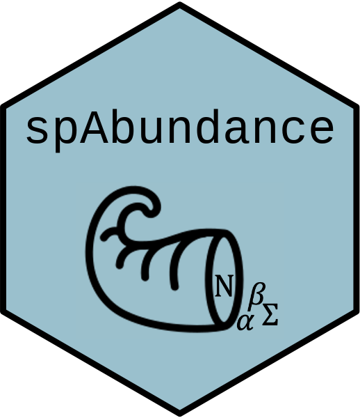

Software
R packages for Bayesian spatial statistics, occupancy and abundance modeling, and forest inventory analysis.

spOccupancy
spOccupancy fits single-species, multi-species, and integrated spatial
occupancy models using Markov chain Monte Carlo (MCMC).

spAbundance
spAbundance fits univariate (i.e., single-species) and multivariate (i.e.,
multi-species) spatial N-mixture models, hierarchical distance sampling models, and
generalized linear mixed models using Markov chain Monte Carlo (MCMC).